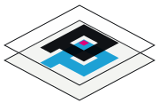

PIXEL-PERFECT · LOGO · TURN 1 · A stacked plates (recommended) · B registration flat · C registered
1aA · Stacked platesrecommended

Two plates from Fig. 1, one P each: cyan on the rear plate, ink on the front. The offset is the plate gap seen from the tilt, not a moved glyph. For the header, README banner, and social image.
1bB · Registration, flat
The headline effect as a mark: C and K plates one step out of register. Favicon source.
1cC · Registered
The assembled state. One P, a hairline of cyan where the rear plate peeks out on the left and bottom.
Single colour (ink)

Rear P becomes an outline; the pixel becomes a filled square.